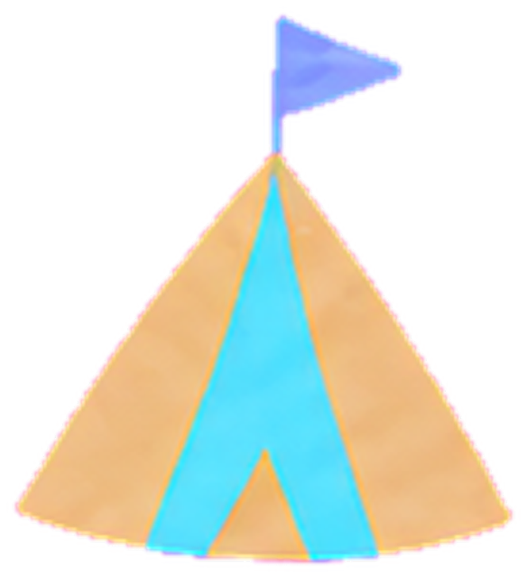

キャリコン試験の「わからない」を、
「わかった！」に変える場所。
国家資格キャリアコンサルタントをめざす大人のための、
やさしい無料学習サイト


今日の3分学びタイム
サニー先生
今日の1問・用語・理論家、この3つだけ。今日のぶんだけで大丈夫。すきま3分で、ちゃんと前に進めるよ。
モヤン
この3つだけでいいの? …それならできそう! ふんふん。
今日の1問
スーパーの理論では、職業選択は自己概念を実現する過程であるとされる。○か×か。
今日の用語
「自分はこんな人」と自分自身について持っているイメージ
今日の理論家
キャリアを「一生かけて自分らしさを実現する旅」と考えた人
ABOUT
はじめまして。こんなサイトです
「キャリコン学びピクニック」は、国家資格キャリアコンサルタント試験をめざす人のための、無料の学習サイトです。
むずかしい専門用語を「小学生にもわかる言葉」に翻訳して、草原のピクニックの世界で楽しく覚えられるようにしました。
あそびかた
ピクニックマップから、学びたい場所へ。わからない言葉は図書館で調べよう。43人の理論家とランチ♪ 楽しく理論を学ぼう。毎日来るだけ、3分でできる試験対策。
このサイトで学ぶと
むずかしい専門用語が「そういうことか！」に変わる。165のことばと43人の理論家が、少しずつ結びついていくよ。
こうなる！
試験当日、「見たことある！」がどんどん増える。勉強が「やらないと」という負担から、「ピクニック」みたいに楽しい時間になる。
コンセプトは、「わからない」を持ち寄って、「わかった！」に変える。
疲れた日は、閉じても大丈夫。ここはいつでも開いているよ。
PICNIC MAP
今日は、どこで何を学ぶ？
気になる場所をクリックして、学びのピクニックへ出かけよう。どこから始めても大丈夫。

キャリア図書館入ってみる →
ピクニック広場入ってみる →
試験対策テント入ってみる →
キャリア相談テント入ってみる →
キャリコンNOW掲示板入ってみる →
キャリアマルシェ入ってみる →
ひと休みの森入ってみる →
🌳 疲れた日は、閉じても大丈夫。ここはいつでも開いているよ。
GUIDE
それぞれの場所で、できること
この学びピクニックが生まれた背景
このサイトは、国家資格キャリアコンサルタントの養成講座で学んでいる運営者が、難しい専門用語をもっと分かりやすく整理したいと思い、制作しています。
私自身も、養成講座を選ぶときには、たくさんの不安がありました。——授業についていける？ 仕事や子育てと両立できる？ ロールプレイは難しい？ 受講料に見合う内容？
実際に受講して分かったことや、受講前に知りたかったことを、受講者の目線でまとめています。
※紹介ページには広告(アフィリエイトリンク)を含む場合があります
運営者プロフィール

ピクニック新聞
みんなに読まれている記事から、3つだけ。